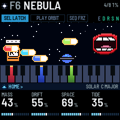
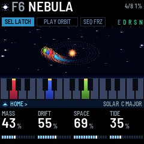
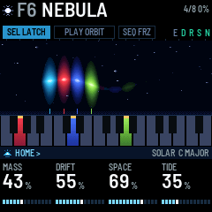
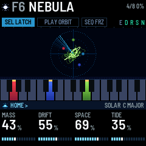

DEEP FIELD
DEEP FIELD turns the M-VAVE FM-1 into an ambient drone machine. Each key you press starts a body: one voice that swells in, keeps sounding, slowly breathes and drifts, and fades out when you stop it. Up to eight bodies play at once.
- The four knobs on the HOME page shape every body at the same time.
- Hold a body's key and the knobs set that body alone: its level, tone, tuning, and whether ORBIT may move it.
- ORBIT moves the bodies to nearby notes on its own, or runs an arpeggio over them.
- Ten models, from eight breathing harmonics to wavetables and four-operator FM.
- The reverb can freeze and shimmer.
- A scene is a sound: change scene and your chord keeps playing while the sound morphs under it.
- MIDI comes in over USB, Bluetooth and the TRS jack, and goes out over USB and Bluetooth.

1Install
From the browser: open the installer page in Chrome or Edge and connect the FM-1 by USB. The installer can also put M-VAVE's own firmware back.
From a terminal: download the firmware file (deepfield-X.Y.fwsc, where X.Y is the version) from the site, connect the FM-1 by USB, and run python3 base/tools/fm1_install.py deepfield-X.Y.fwsc in a copy of DEEP FIELD's source code (github.com/WisestWizard/deepfield).
If an install asks for update mode, hold REC while you switch the FM-1 on.
Installing is at your own risk. If the FM-1 only shows up as a disk called WL82 UBOOT1.00, the rescue tool fm1_rescue (from felucca-bsp) recovers it.
2The first minute
Some of the FM-1's buttons do something other than their printed name: SEL is LATCH, PLAY runs ORBIT, SEQ is FREEZE, REC is Bluetooth, and ARP opens ORBIT's page (it doesn't start an arpeggio by itself). SEL is a button and SELECT is a knob: they are different controls.
- Switch on. The name appears over a vortex and falls into it along a spiral, letter by letter; after about three seconds the screen below takes over (press anything to skip it). The scene F1 FIRST LIGHT loads in silence: nothing plays until you press a key. SEL is lit, which means LATCH is on: each key you press keeps sounding.

- Press a few keys, one at a time. Each one swells in and stays, shown on the screen as a beam over its key. Its key lights up and its beam rises.
- Tap one of those keys again. That body fades out as you let go, and its beam sinks. (Hold it and turn a knob instead, and the knobs set that body alone: section 4.)
- Turn KNOB 1 (MASS): every body gets brighter or darker. Turn KNOB 3 (SPACE): they sink further into the reverb. The four boxes along the bottom of the screen are the four knobs.
- Press PLAY. ORBIT starts and PLAY lights green. Every few seconds one body slides to a nearby note in the scale: watch its beam move.
- Press SEQ. FREEZE turns on (FRZ lights): the reverb holds what it has. Press SEQ again to let it go.
- Turn PRESETS. The scene names scroll past with a line filling under them. Stop, and when the line is full the scene's sound blends in over four seconds, under the chord you are playing. With nothing latched, the scene brings its own chord as well (section 9).
- Hold SEL for a second: every body stops. Then tap SEL: LATCH turns off, and the keys play leads, notes that sound only while you hold them (section 4).
3The screen and the lights
The screen is laid out like the panel. The strip of keys on the screen matches your keys, and the four boxes at the bottom match the four knobs. Only sound gives off light: the bodies glow, and everything around them stays dark. Each colour has one meaning:
| Colour | Means |
|---|---|
| A body's own colour | That body (by its note): its beam, its key on the strip, its band when open |
| Sun (warm gold) | Latched: a spark over the beam, a cap on the key, a bar under a pinned body |
| White | Your hand: a lead, the body you have open |
| Cyan | Where you are: the page band, the bars, the morph line |
| Teal | An effect that is on |
| Orange | Something to look at: unsaved changes, LOAD, a failed save |
Key lights have three levels, one meaning each:
- Bright: a body sounds on this key, and the key is how you reach it: tap it to stop the body, or hold it and turn a knob to set the body alone (section 4). When ORBIT or SEL moves a body, its light moves with it. A lead's key is bright while you hold it (a lead is a note played with LATCH off: section 4).
- Half: sound that is going, or not yours to touch: a body fading out, the latched bodies (the bed) while LATCH is off, a lead fading out.
- Glow: a note in the scale. With the scale set to CHROMA, nothing glows.
A body above or below the keys lights none of them.
A lead's key blinks off for an instant each time it is struck, so you can see every step of an arpeggio, or an accent on a key that is already lit. While FX is held, the keys show the effect switches instead (section 8).
Button lights:
- The open page's button is lit (half-lit while FX is held).
- SEL is lit while LATCH is on, SEQ while FREEZE is on.
- SAVE is lit while the sound or a setting (GLOBAL, MIDI or USB page) has changed since the last save, and blinks in the save dialog. Changing scene, LATCH or the octave doesn't light it, though a save keeps them too.
- PLAY shows ORBIT's mode by its colour: green for WANDER, red for ARP, and orange (green and red together) for the others. It blinks at each SCATTER move and each ARP step.
- OCT- or OCT+ is half-lit one octave from the middle, fully lit two octaves from it.
- SEL held blinks after a third of a second until, at a second, it stops every body (unless you touched a key meanwhile: section 4); REC held blinks until it switches Bluetooth.
| Part | What it shows |
|---|---|
| Header | The model's glyph, then the scene's slot (F1–F16, U1–U16) and name, with a small orange square after it while it has unsaved changes. On the right: OCT when the octave isn't zero; USB while a computer records (USB MUTE when the speaker is silenced, section 11); BLE when a computer, phone or tablet is connected over Bluetooth; DEV when the FM-1 is connected to a Bluetooth MIDI keyboard or controller; how many bodies are sounding; and how busy the processor is (LOAD in orange: see Troubleshooting). Below that, three pills named for their buttons, SEL LATCH (SEL TRANS while SEL held is moving the chord), PLAY ORBIT and SEQ FRZ, filled while on, always in the same places (while ORBIT runs, a white line fills along the foot of its pill toward the next move); the letters E D R S N, lit for the effects that are on (ensemble, delay, reverb, shimmer, noise); and a cyan line along the bottom edge while a scene blends in. |
| The view | The bodies: as beams over their keys, or in one of the other views (section 10). Turning a knob shows its name, its value large and its bar here for a moment; the beams dim but stay in view behind it. Messages such as LATCH OFF, ORBIT ON or SAVED appear here too, and so does the list of scenes while PRESETS turns (section 9). While FX is held, the five effect switches are shown here in a row. |
| The keys strip | All 27 keys as dark glass, lit only by sound: a sounding body's key glows in its colour, bright at the top and dimming down the key (dim while it fades), with a sun cap when latched; the keys of the scale are slightly lighter glass; a lead's key is white (grey as it fades); the bed's keys are dim while LATCH is off; a body's key is the one it sounds on, so it moves when ORBIT or SEL moves the body; the body you have open is framed white. |
| Footer | The page band: the icon of the button that opened the page, its name, the page's name, and < > where SELECT can go, with the model, the scale and its root on the right. Below it, the four knobs in the order of the real knobs: each name, its value (a number large with its unit small, or a word), and a bar that shows the kind of value: segments filling for an amount, one cell per choice for a list, two cells for an on/off switch, hits and rests for RHYTHM. On DX the SHAPE knob reads VOICE, on SCAN TABLE. While a body is open, the band reads BODY and its note in the body's colour, and the four knobs are its own (section 4). |
4The keys: bodies, LATCH, the scale
A body is one voice, and up to eight sound at once. A key starts a body at its note, and the body swells in over SWELL seconds (ENVELOPE page). Leaning on a key, pressing harder once it is down, makes its body brighter and adds wobble for as long as you lean; PRESS (ENVELOPE page) sets how much. The top seven keys (C#5 to G5) can't sense a lean.
With VELOCITY off (the default, on the MIDI page), every key starts its body at the same level, so chords are even. With it on, how hard you strike a key sets its body's level. MIDI notes always use their own velocity.
If you start a ninth body, one fades out quickly to make room: a body that is already fading if there is one, or else the oldest.
LATCH (SEL, lit while on; on by default): a body keeps sounding after you let go of its key. Tap the key it sounds on to stop it (after ORBIT moves a body, its new, lit key): it fades out over FADE seconds from when you let go. However slowly you press, letting go stops the body, unless you turned a knob while the key was down. A latched key has a sun cap on the screen's keys strip, and its beam a sun spark over its head. Hold SEL for a second to stop every body (the screen says EVERY BODY LET GO). Bringing in a scene's chord (section 9) latches its bodies and turns LATCH on.
A body's own values. With LATCH on, each latched body can be set apart from the others:
- Hold the key the body sounds on (its lit key).
- Turn a knob. The body opens: the footer reads BODY and its note, its beam and its key get a white frame, and the other beams dim. That first turn already sets the value.
- The four knobs are now that body's own: - LEVEL: -24 to +6 dB, one dB a click, and MUTE below -24. A muted body stays latched and silent, so ARP and ORBIT still use its note. - TONE: the body's own MASS, -50% to +50%: a dark root under a bright top. - TUNE: -50 to +50 cents, a cent a click. A few cents on a fifth makes it beat slowly; -14 cents on a major third makes it pure. - ORBIT: turn right for PINNED, left for MOVES. ORBIT never moves a pinned body, PULSE never dips it, and ARP leaves it out, so CHORD and CYCLE move the rest of the chord over it like a pedal note. Moving the chord with SEL still moves it. A sun bar across the foot of its beam marks it.
- Let go of the key. The footer goes back to the page you were on, and the body keeps its values and keeps sounding. SAVE lights.
Hold several latched keys and the knobs move all of those bodies together, each from where it is. The values travel with the body when ORBIT or SEL moves it, and are saved with the scene. Over MIDI they go out as NRPN (section 11), so a computer can record them.

Playing leads over the bed. Tap SEL to turn LATCH off (the screen says LATCH OFF, KEYS PLAY). The bodies that were latched keep sounding: that is the bed. The keys now play leads over it. A lead is a note in the scene's own sound that plays while you hold its key and fades when you let go. Leads never latch, and ORBIT never moves them. A key whose note is already latched plays a lead on top of its body, as an accent. Up to four leads play at once; a fifth replaces the oldest. On the screen a lead is a thin white beam, and its key is white on the keys strip. Tap SEL again to go back to LATCH.
MIDI notes work the same way: with LATCH on, a MIDI note plays a body that sounds until its note off (it never latches); with LATCH off, it plays a lead.
The LEAD page (ENV, then SELECT) shapes the leads: ATTACK (1 ms to 2 s), RELEASE (30 ms to 7.7 s), LIFT (up to two octaves higher, in semitones) and LEVEL (59% matches a body; 100% is 6 dB louder).

Moving the chord. Hold SEL and touch a key: the whole latched chord moves there, its lowest note to that key and the other notes keeping their distance above it. While SEL is down, each key you touch moves it again; the pill reads SEL TRANS and the screen says TRANSPOSE and the note. The bodies glide over GLIDE (ENVELOPE page), and their lights move with them. Let go of SEL and the keys strike bodies again (or play leads, with LATCH off), LATCH as it was. Over MIDI, the old notes are switched off and the new ones on. Holding SEL for a second without touching a key stops every body instead; after that the keys strike again, even before you let go of SEL.
The scale. SCALE on the GLOBAL page picks the scale: CHROMA, MAJOR, MINOR, DORIAN, PHRYGIA, LYDIAN, MIXO, PENTA+ (major pentatonic), PENTA- (minor pentatonic), WHOLE or HARM- (harmonic minor). ROOT picks its root note. Every key, black keys included, always plays its own note. The scale does two things: its notes glow on the keys, and ORBIT only moves bodies to notes in it.
OCT- and OCT+ move the keys down or up an octave, up to two octaves each way. The header shows OCT and the number.
5The four forces (HOME)
HOME is the main page. Its four knobs, MASS, DRIFT, SPACE and TIDE, are the four forces: each one shapes every body at once.
| Knob | Name | What it does |
|---|---|---|
| KNOB 1 | MASS | How full and bright the sound is. What it changes depends on the model: on SOLAR, how many harmonics and how bright; on VOID, the filter cutoff (shown in Hz); on GLASS and DX, the FM depth; on STRING, the string's brightness; on SCAN, a filter that follows the note. Leaning on a key adds to it for that body, and so does the body's own TONE. |
| KNOB 2 | DRIFT | How much everything wanders: the detuning, the slow drift of pitch, the wobble, the breathing of the harmonics, and how fast the stars move on the screen. |
| KNOB 3 | SPACE | How much reverb, and a little delay. The dry sound stays as it is. |
| KNOB 4 | TIDE | How much each body fades down and back up on its own slow cycle. At full, each body goes all the way to silence and back. TIDE RATE (MOTION page) sets how fast. |
MASTER is the volume.
6The pages
Each button opens its page, and the four knobs then set that page's four values, shown along the bottom of the screen. A button always opens the same page, and its light shows which page is open. Turn SELECT to step to the next or previous page, in the order of the table below: DELAY, DELAY 2 and REVERB are one, two and three steps after ENSEMBLE, for example. The page band's < and > show where SELECT can go. A page stays open until you press another page button or turn SELECT. Most values show on the screen as a percentage.
Turning the knobs. Turned slowly, a knob moves in small steps: about 43 clicks from one end to the other. Turned quickly, in big ones: 16 clicks end to end. VOID's MASS, a free DLY TIME and ATTACK move in finer steps still, and RATE one BPM a click. A knob with only a few values (STEPS UP TO, DISTANCE, BODIES, LIFT, the delay's note lengths, DX's voices) moves one value a click at any speed.
COLOUR is on both NOISE and DELAY 2: the page band tells you which one you are turning.
| Button | Page | KNOB 1 | KNOB 2 | KNOB 3 | KNOB 4 |
|---|---|---|---|---|---|
| HOME | HOME | MASS | DRIFT | SPACE | TIDE |
| EDIT | BODY | MODEL (also on ALGORITHM) | SHAPE | SUB | AIR |
| EDIT, SELECT once | NOISE | LEVEL (0 is off) | COLOUR (brown to white) | WIND (how fast it moves, how often it gusts) | BAND (wide, narrow, or on the bodies: see below) |
| ENV | ENVELOPE | SWELL (fade-in, 30 ms to 20 s) | FADE (fade-out, 30 ms to 20 s) | PRESS (how much a lean brightens) | GLIDE (how long an ORBIT move or a transpose takes) |
| ENV, SELECT once | LEAD | ATTACK (1 ms to 2 s) | RELEASE (30 ms to 7.7 s) | LIFT (0 to +2 octaves, in semitones) | LEVEL |
| LFO | MOTION | TIDE RATE | WOBBLE (vibrato) | WALK (a slow random drift of pitch) | WIDTH (stereo spread across the notes) |
| FX | ENSEMBLE | ENSEMBLE (OFF, CHOR I, CHOR II or ENSEMBLE, the fullest) | ENS MIX | – | – |
| FX, SELECT once | DELAY | TYPE (PING, TAPE, HEADS, REVERSE, RISE, FALL, GRAINS) | DLY TIME | DLY FDBK (how many repeats) | DLY MIX (how loud) |
| FX, SELECT twice | DELAY 2 | COLOUR (dark or bright repeats) | DIFFUSE (echoes blurred into a cloud) | WOW (how far the tape wanders) | CHOP (only slices of the sound go in) |
| FX, SELECT three times | REVERB | REV SIZE (how long it rings, about 0.6 to 8 s) | REV DAMP (how fast the highs die away) | SHIMMER | SPACE (the same as on HOME) |
| ARP | ORBIT | MODE | Depends on the mode (section 7) | Depends on the mode | Depends on the mode |
| ARP, SELECT once | ORBIT 2 | HOME PULL | OCTAVES (ARP, 1 to 3) | RHYTHM (ARP: its hits and rests) | DIV (ARP: a step's length) |
| GLO | GLOBAL | SCALE | ROOT | VIEW | MORPH (NOW, or 1 to 30 s) |
| GLO, SELECT once | MIDI | IN CH (OMNI or 1–16) | OUT CH (1–16) | LOCAL | VELOCITY |
| GLO, SELECT twice | USB | SPEAKER (ON, AUTO, OFF) | USB LEVEL (the recording's level, 0 to -18 dB) | CLOCK OUT | – |
The models (turn ALGORITHM, or KNOB 1 on BODY). A new model crosses every body over in under a second, the new sound rising as the old one fades, as a scene in another model does over MORPH (section 9).
| Model | What it is | MASS | SHAPE |
|---|---|---|---|
| SOLAR | Eight harmonics, each breathing on its own | More harmonics, brighter | Odd harmonics (hollow), then all of them, then even ones (like an organ) |
| VOID | Three detuned saws and a sub through a dark filter | The filter cutoff | The detune |
| GLASS | Two-operator FM with a breathing depth and a detuned second carrier | The FM depth | The ratio: 1, 2, 3, 3.5, 4, 5, 7 or 1.41 |
| STRING | A bowed string | Brightness | No effect |
| CHOIR | A buzz through three vowel formants | Moves the formants up and brings the upper two forward | The vowel: A, E, I, O, U |
| BELL | Four partials, each breathing on its own | Brighter upper partials | From the harmonic series to a bell's ratios |
| SHEPARD | Six octaves of sine under a moving window: a rise or fall that never ends | Leans the window high or low | Still at the middle; below it falls, above it rises, faster further from the middle |
| FOLD | A sine through a wavefolder (DRIFT makes the fold breathe) | The filter after the fold | How hard it folds |
| SCAN | Pocket Poly's three wavetables in one sweep: ANALOG (sine to saw, square and a narrow pulse), VOX (vowels), GLASS (a bright cluster that climbs). DRIFT lets each body's place wander. | A filter that follows the note; the level stays the same | Where in the sweep: the screen names the table and its frame (ANALOG 1 to GLASS 16) |
| DX | Four-operator FM after Pocket Poly's FM engine. Its envelopes run at SWELL's pace, so a slow SWELL evolves the timbre slowly. DRIFT breathes the brightness. | The FM depth | The voice, one a click: GLASS PAD, BRASS, ORGAN, BELL PAD, E.PIANO, WOOD, STRINGS, CLUSTER |
SUB adds an octave below on every model. AIR adds breath or noise: the bow's noise on STRING, breath on CHOIR, the hiss of the strike on BELL, a breath of noise on SHEPARD, and noise into the fold on FOLD. On SCAN it adds a second, detuned copy from another place in the sweep; on DX, feedback (grit). It does nothing on SOLAR, VOID or GLASS.


The noise layer (EDIT, then SELECT for NOISE) is a stereo noise under the bodies, or on its own with no keys held: wind, sea, rain or breath.
- LEVEL turns it on and sets how loud it is (0 is off).
- COLOUR runs from brown (a deep rumble, down to 25 Hz) to white.
- WIND sets how fast the noise moves and how often a gust comes.
- BAND: at 0, a wide bed. Up to the middle, a band that narrows onto the newest note. Past the middle, narrow bands on the four loudest bodies, each as loud as its body, so the noise becomes air through the chord.
- Each scene also sets four noise values that have no page: its TEXTURE (hiss, rain or crackle), its GUSTs (now and then, at WIND's pace, it swells louder, brighter and higher, sitting lower between; FREEZE holds the weather), how far it DUCKs under a chord, and its WIDTH. A scene you save keeps those of the scene it came from.
The four forces shape the noise too: MASS brightens it, DRIFT widens its wander, SPACE sends it to the reverb, and TIDE makes it breathe. Leaning on a key brightens it, and it fades in and out at SWELL and FADE like a body. Hold FX and press C4 (white key 5) to switch it off and on again. Switched back on, it returns at the level it had when you last switched it off, or else at the scene's saved level, or else at a third. N lights in the header while it is on, and its beam on the screen rises with each gust. MIDI CC 20 sets its LEVEL.

Each scene also sets, with no page, how unlike each other its bodies are: each body's own small detune, MASS and place in the stereo field (SPREAD), pairs bending each other's pitch (CROSS), each body's MASS wandering (TIMBRE) and each drifting across the stereo field (SWAY). A scene you save keeps those of the scene it came from.
The delay. DLY FDBK sets how many repeats and DLY MIX how loud they are. TYPE (the first knob on DELAY) chooses what kind of delay it is:
| TYPE | What you hear |
|---|---|
| PING | Left, then right, then left again, each repeat a little further away. The right-hand echo comes a little later than the left one, so the repeats never fall into a pattern. |
| TAPE | One echo in the middle, darker and grittier each time round, its pitch wandering, so it beats against the drone. |
| HEADS | Three echoes for every one: at a third, two thirds and the whole of DLY TIME, left, centre and right. One note becomes a rhythm. |
| REVERSE | Each echo plays backwards: a note's echo swells up to where it started. |
| RISE | Each echo an octave higher than the last, climbing out of the drone and thinning as it goes. |
| FALL | Each echo an octave lower, sinking under the drone. |
| GRAINS | Short pieces of the last two seconds, one every DLY TIME, scattered left and right: a held chord turns into a glittering cloud of itself. |
Turning TYPE fades the echoes out and starts the new kind fresh.
A held drone hides its own echoes: an echo of a steady sound is the same steady sound. TAPE's wander, RISE and FALL's pitch, REVERSE's swell and GRAINS' pieces make them heard; on PING, and on all of them, CHOP and WOW help.
- Over most of its turn, DLY TIME is a time from 50 to 800 ms, and the screen shows it in ms. On PING the right-hand echo comes a little later than the left one, up to 1.1 s.
- Near the top of its turn, DLY TIME becomes a note length: 1/16, 1/8, 1/4T, 1/8D, 1/4, 1/4D or 1/2 (T is a triplet, D is dotted). The tempo comes from RATE (ARP's tempo, on the ORBIT page with MODE set to ARP), or from MIDI clock when it is coming in, so the echoes land in time with ARP; on PING the right-hand echo then lands on the beat too. A length that would be longer than 800 ms at that tempo plays at half length, still in time. On GRAINS, DLY TIME is how often a piece comes.
- COLOUR (DELAY 2) filters the repeats: low, they get darker and stay full; high, they get thinner and brighter, so they stand apart from the drone.
- DIFFUSE (DELAY 2) blurs each repeat: at 0 a clean tape echo, past the middle a short burst, at full a cloud that trails the drone instead of repeating it.
- WOW (DELAY 2) sets how far the tape's pitch wanders: at 0 clean, at about a third the gentle wander the delay always had, at full seasick. A wandering echo goes slightly out of tune with the drone, and you hear it beat.
- CHOP (DELAY 2) lets only slices of the sound into the delay, one at the start of every DLY TIME: at 0 everything goes in, at full a short slice. A held chord then comes back as a pulse of itself, in time with the delay. The slices are made louder as they get shorter, so the echoes stay as loud overall.
- Changing DLY TIME bends the pitch on its way, like tape.
7ORBIT
ORBIT moves the latched bodies by itself. Press PLAY to start it and again to stop it; when it stops, the bodies stay where they are. When it starts, the screen names the mode (WANDER EVERY 5.1S, for example). While it runs, the PLAY pill fills up toward the next move and flashes when it comes. The pill is named for the mode: PLAY ORBIT for WANDER, PLAY CHORD, PLAY SCATTER and so on.
Pick the mode with KNOB 1 (MODE) on the ORBIT page: press ARP. KNOB 2 to KNOB 4 change with the mode, and PLAY's colour shows it:
| Mode | PLAY | KNOB 2, 3, 4 | What happens |
|---|---|---|---|
| WANDER | green | EVERY, CHANCE, STEPS UP TO | Every EVERY seconds (give or take a quarter), with a CHANCE, one body moves to a nearby note in the scale, up to STEPS UP TO scale steps away. It never moves onto a note another body is playing. |
| CHORD | orange | EVERY, CHANCE, DISTANCE | All the bodies move together by the same number of scale steps, up to DISTANCE, so the whole chord shifts to a related one. |
| SCATTER | orange | EVERY, BODIES, STEPS UP TO | Several bodies move at once, each its own way, with looser timing (give or take a half). BODIES sets how many: one at 0, all the latched bodies at full. |
| ARP | red | RATE, GATE, ORDER | An arpeggio. The bodies keep droning while a lead (section 4) steps through their notes. RATE is the tempo (40 to 240 BPM) and DIV (ORBIT 2) how long a step is (an eighth note unless you change it). GATE is how long each step is held (smoothly joined at the top). ORDER is UP (from the lowest), DOWN (from the highest), UP DOWN, RANDOM, or PLAYED (the order you struck them). OCTAVES (ORBIT 2) spreads it over more octaves, and RHYTHM (ORBIT 2) puts rests between the notes. Add or let go a body while it runs and it carries on from the note it just played. ARP remembers the notes, in the same ORDER: stop every body (hold SEL) and it keeps playing until you press PLAY. A pinned body is left out: it drones under the runner. The pill fills over the RHYTHM's steps. |
| CYCLE | orange | EVERY, CHANCE, CHORDS | The chord walks through a progression, picked with CHORDS (below). Each step is counted in scale degrees from where you played the chord. |
| ECHO | orange | EVERY, DECAY, JUMPS | Your last eight leads (keys played with LATCH off, or MIDI notes then) come back as a phrase every EVERY seconds, quieter each time, losing notes (DECAY) and jumping octaves (JUMPS) until it is gone. A new note starts it again with the new phrase. ARP's own notes don't count. |
| PULSE | orange | EVERY, CHANCE, ROLL | Every EVERY seconds, with a CHANCE, each body dips and swells back at SWELL speed, from low to high, ROLL apart: a slow strum across the chord. |
Every mode but ARP needs at least one latched body: with none, nothing moves (so ECHO needs a bed under the leads). SCATTER and ECHO have no CHANCE knob, but they still use the CHANCE last set in another mode. A pinned body (section 4) is never moved.
EVERY runs from 0.1 s to 60 s, shown in tenths of a second below ten. Under a second ORBIT stops changing the chord and starts playing it: at half a second WANDER and SCATTER make a slow melody inside the chord, and with GLIDE longer than EVERY the bodies never land, a swarm. CHORD that fast is mostly a blur. Under half a second the screen stops showing where the moves go (they would only flicker). ECHO never runs faster than once a second: its phrase needs the time.
RHYTHM (ORBIT 2, for ARP) spreads the notes over a pattern of steps as evenly as they go, and rests on the others: 8/8 (every step a note), 5/8, 3/8, 7/12, 5/12, 4/9, 7/16 or 5/16. The notes move on only at a note, so four notes over five hits fall differently against the pattern every time round. DIV sets a step's length against RATE's beat: 1/16, 1/16T, 1/8, 1/8T, 1/8D, 1/4, 1/4T, 1/2 or 1 BAR (T a triplet, D dotted). Slow steps with a long RELEASE (LEAD page) toll like bells.

CYCLE's progressions: I IV V, I VI IV V, I V VI IV, I VI III VII, I IV I V, I II V, I III VI IV and I VII IV. They are scale degrees, so in a minor key I IV V means i iv v.
HOME PULL (ORBIT 2) is the chance that a body, or in CHORD the whole chord, is pulled back to the key where it started. ORBIT leaves alone the bodies held over MIDI, the pinned bodies, and the leads. Each move goes out over MIDI as a note off and a note on.
Seeing where it goes. ORBIT picks each move when the countdown starts, so you can see it coming. A line grows from the top of the body's beam toward the key it is going to, and a faint ghost beam stands at that key. When the move comes, the beam slides along the line and the key's light moves with it: the body is now reached from its new key. On the ORBITS view, a planet's orbit grows or shrinks as it glides to the new pitch.


MIDI clock. While MIDI clock comes in (over USB, TRS or Bluetooth), ARP steps at DIV of it and RATE reads EXT; EVERY counts in whole beats of that tempo (or a half or a quarter of a beat, below one), so ORBIT's moves land in time. A MIDI start restarts ARP. After two seconds without clock, ORBIT goes back to its own timing. CLOCK OUT (USB page) sends clock, with start and stop, while ARP runs from RATE, so a drum machine can follow the FM-1.
8FREEZE and the effects
FREEZE (SEQ, lit while on): the reverb holds what it has, forever. Nothing new goes in, nothing dies away, and it comes up to about the level of the dry sound. The bodies keep playing on top, dry and through the delay. The shimmer is silent while frozen. Press SEQ again to let it go. While it is frozen, four ice brackets stand in the view's corners and the view holds still: the stars stop drifting and twinkling, the beams stop breathing, the mist stops moving.

SHIMMER (REVERB page) feeds the reverb back into itself an octave higher: a rising cloud. It can't run away, whatever the reverb's size.
Switching effects on and off. Hold FX, and the five lowest white keys become switches, on every scene:
| Key | Switches |
|---|---|
| F3 (white key 1) | Ensemble |
| G3 (white key 2) | Delay |
| A3 (white key 3) | Reverb |
| B3 (white key 4) | Shimmer |
| C4 (white key 5) | The noise layer |
Press a key to switch its effect on, and again to switch it off. Switched off, the delay and the reverb stop taking in sound and let what they hold ring out, as a pedal's spillover does (a frozen reverb stops at once). An effect the scene has at zero comes in at a useful amount: DLY MIX 27%, SPACE 35%, SHIMMER 23% (with the reverb), and ENSEMBLE CHOR I with ENS MIX at 31%. While FX is held, the screen shows the five switches in a row, each ON or OFF (the noise with its level), and the keys of the effects that are on light teal. The keys play no notes while FX is held. The switches are saved with the scene, and E D R S N in the header show which effects are on. While an effect is off, its amount reads OFF on its knob (SPACE, DLY MIX, ENS MIX, SHIMMER).
Tap FX without pressing a key to open the effects pages instead: ENSEMBLE, then turn SELECT for DELAY, DELAY 2 and REVERB, in the same order as the keys.


9Scenes: changing and saving
A scene is a sound. It holds the values on the sound pages (HOME, BODY, NOISE, ENVELOPE, LEAD, MOTION, the effects and ORBIT) and the effect switches. It also keeps a chord: the bodies that were latched when it was saved, with their own values (section 4). The GLOBAL, MIDI and USB pages are settings instead: they stay as they are when you change scene. F1–F16 are the factory scenes. U1–U16 are yours, and start with no chord.
Changing scene. Turn PRESETS. The view shows the scene you are turning to large, its neighbours on either side, and all 32 slots as a row of marks (F1–F16, then U1–U16): the one you are on in cyan, the one you are turning to tall and white. Nothing changes while you keep turning. A line fills along the foot of the view, and when it is full (0.7 s after you stop) the scene lands, and its sound blends in over MORPH seconds (GLOBAL page; 4 s by default, or NOW to switch at once). A bar along the bottom of the header shows the blend.
- Your chord keeps sounding. If the new scene has another model, each body crosses into it, the new sound rising as the old one fades. With eight bodies there is no room to cross, so they switch one at a time, low to high, and the chord never drops out at once.
- LATCH, ORBIT (PLAY, its colour, and while it runs its page's values too), FREEZE, the octave and the scale stay as they are.
- A delay or reverb the new scene switches off rings out.
- A MIDI program change does the same, but never brings a chord.

Bringing in a scene's chord. With nothing latched, PRESETS brings in the scene's chord with its sound: the screen says SCENE + CHORD (+ CHORD in sun under the name in the list). Its bodies come in latched, LATCH turns on, and its ORBIT values come too. With a chord latched, PRESETS changes only the sound; to hear another scene's chord, hold SEL for a second to stop yours first. To bring in the chord of the scene you are on, turn PRESETS one click forward and back. A scene with no chord leaves your bodies alone. Every factory chord is stored on C and plays in ROOT (GLOBAL page); a chord you save plays in the ROOT it was saved in, moved to today's.
Switching on. The scene you were on loads in silence: its sound is ready, and nothing plays until you press a key, or turn PRESETS to bring in a chord.
Saving.
- Press SAVE. The screen says SAVE SCENE TO and a user slot.
- Turn PRESETS (or SELECT, or KNOB 1) to choose U1–U16.
- Press SAVE again. The sound and the bodies latched right now (each with its own values, in the ROOT you are in) go into that slot, and the screen says SAVED. Press HOME instead to cancel.

The saved scene takes the name of the scene you were playing, unless you save over the user slot you are on, which keeps its name.
Every save also stores the settings: which scene you are on, the octave, scale, root, LATCH, VELOCITY, LOCAL, the view, MORPH, the MIDI channels, the USB page, and Bluetooth on or off. Nothing is stored until you save: switch off without saving and all of it goes back to the last save.
The factory scenes (their chords stand on C, in ROOT):
| Scene | Model | Sound |
|---|---|---|
| F1 FIRST LIGHT | SOLAR | A warm major chord |
| F2 VOID TIDE | VOID | Low and breathing |
| F3 GLASS ORBIT | GLASS | Shimmer and delay; made for ORBIT |
| F4 BOWED SKY | STRING | Wide |
| F5 PULSAR | GLASS | A fast tide |
| F6 NEBULA | SOLAR | Hollow, very slow swells, drowned in reverb, a wind bed |
| F7 DEEP VOID | VOID | Sub and a long delay over a quiet crackle |
| F8 STARLIGHT | STRING | Bright, airy, high |
| F9 CATHEDRAL | CHOIR | An open vowel in a big hall |
| F10 LOW CHOIR | CHOIR | A closed vowel, low, with sub and breath on the voices |
| F11 GAMELAN | BELL | Bell ratios and shimmer; made for ORBIT |
| F12 ICE BELLS | BELL | High and wide, with a bright rain |
| F13 ASCENT | SHEPARD | Rising |
| F14 DESCENT | SHEPARD | Falling, dark, a low wind |
| F15 FOLDED SUN | FOLD | Bright, with ensemble |
| F16 TIDE POOL | FOLD | Dark, a deep tide, delay |
10The views
VIEW on the GLOBAL page picks how the screen draws the bodies. BEAMS is the one to play by; the others are different pictures over the same keys.
| View | What you see |
|---|---|
| BEAMS | Each body is a beam of light rising from its key, in its key's colour, brightest at its foot, with a white-hot head that marks its level: you see it swell in and sink as it fades (dim), and it breathes with the body. A latched beam has a sun spark over its head; a pinned one a sun bar across its foot; an open one (section 4) white frames, with the other beams dimmed. An ARP step flashes its body's head. When ORBIT moves a body, its beam slides to the new key and leaves a mark where it started, and before the move a line reaches from its head toward a dotted ghost at the key it is going to. A body above or below the keys (a MIDI note, or after an octave change) stands thin at the edge. The noise layer is a mound of mist where its band sits, warm when brown and pale when white, drifting with WIND and lifting with each gust. Stars drift at DRIFT's speed, each twinkling slowly on its own, over a faint horizon; FREEZE stills all of it and puts ice brackets in the corners. |
| MOUTH | An orange pill bottle on the left pops its cap and tumbles out a pill for every new body. A mouth on the right opens with the sound. The pills hang over their keys, high notes higher, in two colours (the body's and white), outlined in sun once latched. A body you stop flies into the mouth and is eaten. Now and then the mouth snatches the pill of a body that is still sounding and spits it back out. |
| ORBITS | A sun that pulses with the sound. Each body is a planet: its distance from the sun is its pitch, its speed follows its breathing, its size is its level, and its colour is its note. A latched planet has a sun ring; a fading one dims. Stars drift behind at DRIFT's speed. |
| NEBULA | The bodies' harmonics as glows along a wavy band, low notes on the left and high on the right, coloured by body, with a mark under each body's note. |
| SCOPE | A radar. Each body is a blip: its note sets the angle and its octave the distance from the centre, and it lights as the sweep passes. The sound's left channel against its right draws a figure; its shape shows the stereo width and the beating. |




Every view except MOUTH leaves fading trails as things move.
11MIDI and Bluetooth
MIDI in comes over USB, Bluetooth and the TRS jack, on IN CH (OMNI, any channel, by default). With LATCH on, a MIDI note plays a body until its note off; with LATCH off, it plays a lead (section 4). The sustain pedal (CC 64) keeps the bodies going. Poly and channel pressure brighten the sound, like leaning on a key. Pitch bend bends everything up to two semitones either way. MIDI clock times ORBIT (section 7).
MIDI out goes over USB and Bluetooth, on OUT CH. The TRS jack is in only. A key sends a note on when you press it, and a note off when its body starts to fade, which is later than your release if the body was latched. Leaning on a key sends poly pressure. ORBIT's moves go out too. With LOCAL off (MIDI page), the keys only send MIDI and don't play DEEP FIELD.
| MIDI CC | What it does |
|---|---|
| 1 | Wobble (the mod wheel) |
| 7 | Volume |
| 16, 17, 18, 19 | MASS, DRIFT, SPACE, TIDE |
| 20 | The noise layer's LEVEL |
| 64 | Sustain |
| 71 | SHAPE |
| 72 | FADE |
| 73 | SWELL |
| 74 | MASS |
| 91 | SPACE |
| 93 | ENS MIX |
| 94 | DLY MIX |
| 102 | The delay's TYPE (0–127 in seven equal parts: PING, TAPE, HEADS, REVERSE, RISE, FALL, GRAINS) |
| 103 | WOW |
| 104 | CHOP |
| 120 | Silence at once |
| 121 | Controllers back to rest |
| 123 | Stop every body |
A body's own values (section 4) go out, and come in, as NRPN: CC 99 picks the value, CC 98 the body (the note it was struck at), CC 6 sets it. They go out as you turn the knobs, so a computer can record and play them back.
| CC 99 | Value | CC 6 |
|---|---|---|
| 1 | LEVEL | 0 MUTE, 1–31 = -24 to +6 dB (25 is 0 dB) |
| 2 | TONE | 64 + the value (14–114) |
| 3 | TUNE | 64 + the cents (14–114) |
| 4 | ORBIT | 0–63 MOVES, 64–127 PINNED |
A program change loads a scene's sound, as PRESETS does: 0–15 F1–F16, and 16–31 U1–U16.
Recording over USB. Plugged into a computer, the FM-1 is also a USB audio input called DEEP FIELD FM-1 (stereo, 44.1 kHz). SPEAKER on the USB page (GLO, then SELECT twice) decides what the speaker and headphones do while you record:
- AUTO (the default): when a program on the computer starts using the input (an armed track in Live, a recorder), the speaker and headphones go quiet and the header says USB MUTE. The recording is set by USB LEVEL, whatever MASTER is set to. When the program stops using the input, the speaker comes back at MASTER.
- ON: the speaker and the recording both follow MASTER, as on M-VAVE's firmware. USB LEVEL does nothing.
- OFF: the speaker stays silent, and the recording is set by USB LEVEL.
The header says USB while a computer is recording. USB LEVEL sets the recording's level with AUTO and OFF, without touching the speaker. It is -6 dB by default, so a full chord peaks about 6 dB below the loudest the recording can go.
Bluetooth. Bluetooth MIDI starts when the FM-1 does. A computer, phone or tablet can connect to it as DEEP FIELD FM-1. To connect the FM-1 to a Bluetooth MIDI keyboard or controller:
- Press REC. The screen says BLE SCANNING and then names each device it finds. Turn ALGORITHM to choose one.
- Press REC again to connect (CONNECTING, then CONNECTED). Press REC once more to disconnect.
Hold REC for a second to turn Bluetooth off or on. Save a scene to keep that choice after you switch off.
12The screen reader
DEEP FIELD works with fm1-reader, a screen reader for the FM-1. It speaks every message the screen shows, and on request reads out the scene, the page and the page's four values. DEEP FIELD gives it the way to say each of its screen words (words.tsv in the source code).
13Troubleshooting
| Problem | What to check |
|---|---|
| A key does nothing | SEL is held: the keys move the chord (the pill reads SEL TRANS). Or FX is held: the keys switch effects. Or LOCAL is off (MIDI page). |
| A key didn't stop its body | A knob turned while it was down, which set the body instead (BODY in the page band). Tap it again. |
| The knobs set one body instead of the page | A body's key is held (BODY in the page band). Let go. |
| A body won't move with ORBIT | It is pinned: hold its key and turn KNOB 4 left (MOVES). |
| Pressing a key starts a body instead of stopping one | No body sounds on that key: ORBIT or SEL moved it, and its light moved with it. Tap the lit key. |
| A body stops when I let go of the key | LATCH is off (SEL dark). Tap SEL. |
| Leaning on a key does nothing | The top seven keys (C#5 to G5) can't sense a lean. Or PRESS (ENVELOPE page) is at 0. |
| The knobs change the wrong thing | Another page is open: check the page band at the bottom of the screen. Press HOME. |
| Bodies move by themselves | ORBIT is running (PLAY lit). Press PLAY to stop it. |
| ORBIT does nothing | No body is latched. Every mode but ARP needs at least one. |
| The reverb won't die away | FREEZE is on (SEQ lit). Press SEQ. |
| A scene is silent | A scene brings its chord only when nothing is latched: hold SEL for a second, then turn PRESETS (section 9). Switching on is silent too. Or a body is muted (its LEVEL at MUTE). Or TIDE at full fades each body all the way down on its cycle. Or the scene is still blending in. |
| My settings were gone after switching off | Settings are only stored when you save a scene (section 9). |
| LOAD in the header | The FM-1 once ran short of processing time, so it plays one body fewer until things have been calm for a while. |
| The buttons or knobs respond wrongly | Hold OCT- and OCT+ while you switch on: the hardware calibration asks you to press each button and turn each knob. |
| An install was cut off | Hold REC while you switch on for update mode, then install again. |